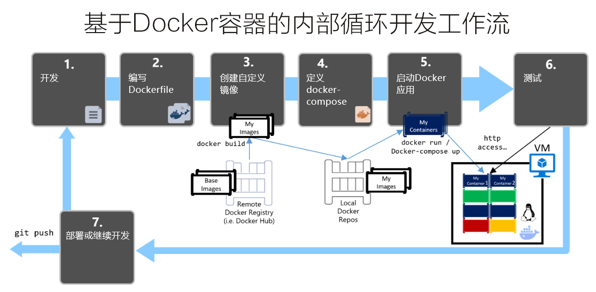
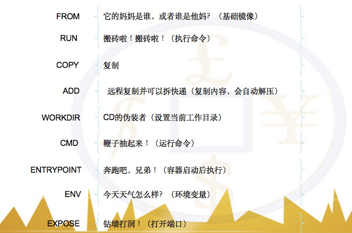
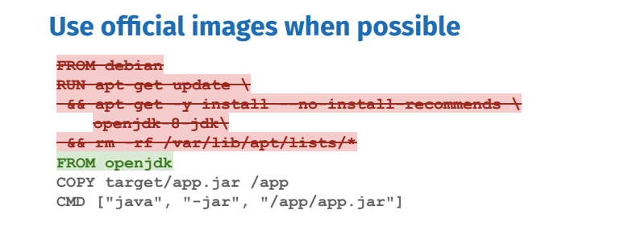
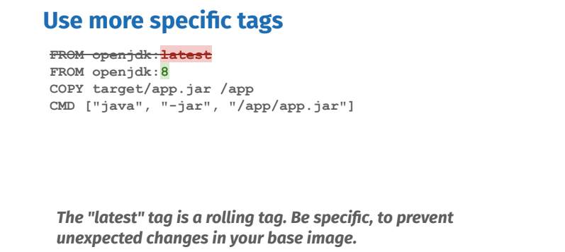
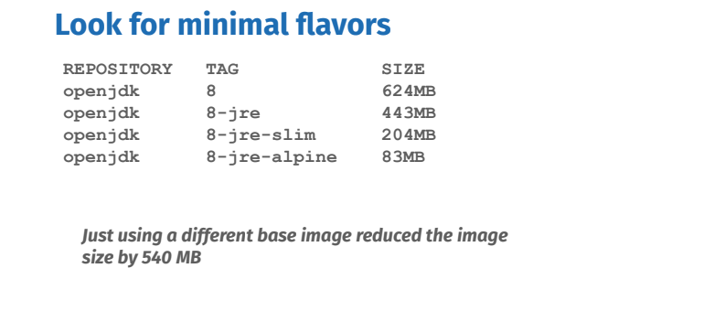
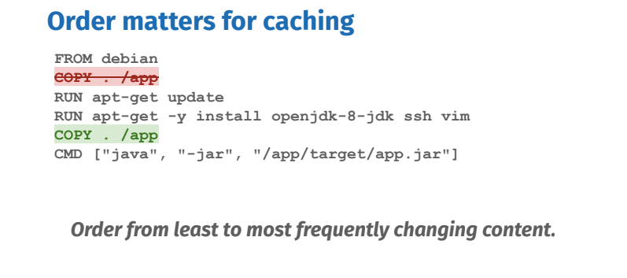
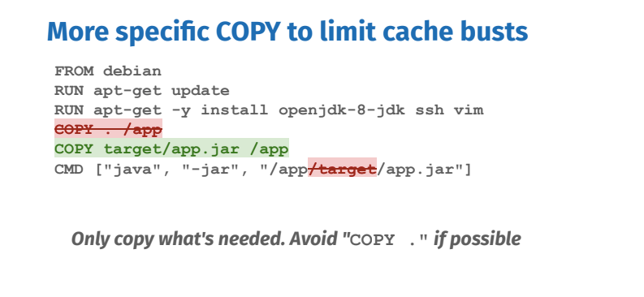
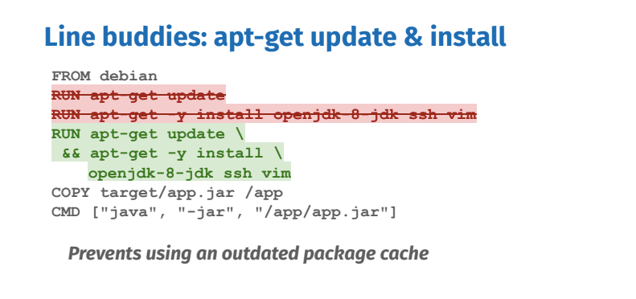
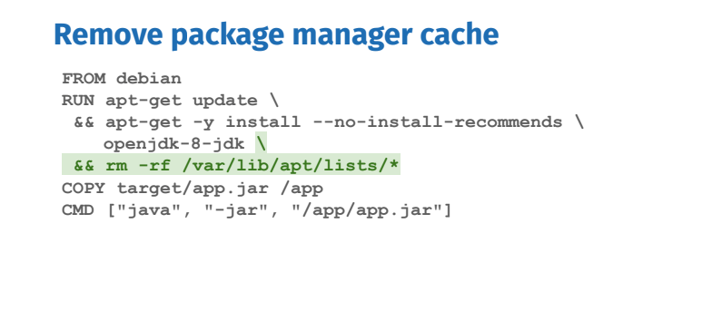
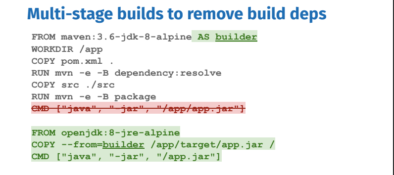

不能忽视对
dockerfile的优化，但也不要为了优化而优化。

- 镜像构建的过程，视具体业务场景的不同而不同。在很多情况下，我们需要先以满足业务目标为准，而不是镜像的构建层数。如果需要减少镜像层数，一定要选择合适的基础镜像或者创建符合需要的基础镜像。

1. 选择基础镜像
缩短构建时间
选择合适产品的基础镜像，这点相对来说非常重要。选择一个合适的基础镜像，需要能够满足运行应用所需要的最小的镜像。理论上是能用小的就不要用大的，能用轻量级的就不要用重量级的，能用性能好的就不要用性能差的，能用稳定版就不要用开发版。
比如我们构建
Java语言的程序，最好的方式就是使用官方提供的openjdk:8作为基础镜像，而非使用比较大的ubuntu:18.04作为基础镜像。另外，还有一个需要我们注意的地方就是，尽可能使用官方的特定版本的镜像，而不要使用latest这个频繁变动的tag作为基础镜像。
FROM ubuntu:18.04
FROM openjdk:latest
FROM openjdk:8



2. 优化指令顺序
缩短构建时间
构建
Docker镜像的时候，会缓存Dockerfile中尚未更改的所有步骤。所以，如果新构建时更改任何指令，将后的指令步骤将会重新来不再使用缓存。举例来说，就是指令3发生了变更，其后的4-n就会重跑并重新生成缓存。因此，编写
Dockerfile的时候，就需要将最不可能产生更改的指令放在前面。比如，可以把WORKDIR/ENV等命令放在前面，COPY/ADD等命令放在后面。这样，在构建过程中较多的使用了缓存，就可以节省很多时间了。
FROM ubuntu:18.04
WORKDIR /opt/app
ARG env=env
ENV ENV=${env}
COPY . /opt/app/
RUN apt update -y htop

- 同时，在使用
COPY/ADD等命令的时候越具体越好，最好只复制所需的内容。
FROM ubuntu:18.04
WORKDIR /opt/app
COPY target/docker_patch.py /opt/app/
RUN apt update -y htop

3. 合并构建指令
缩短构建时间
- 我们都知道，在编写
Dockerfile的时候，每一个指令都会创建一层并构成新的镜像。当运行多个指令时，会产生非常多层的镜像，不仅仅增加了构建部署的时间，也很容易出错。因此，在这种情况下，我们需要将同类型的指令合并然后再一起运行。合并指令时，一定要注意格式(比如换行、缩进、注释等)会让维护、排障更为容易。
RUN apt update -y && \
DEBIAN_FRONTEND=noninteractive apt install --no-install-recommends -y \
python3.6-dev \
python3-distutils \
nginx \
vim.tiny \
supervisor \
ca-certificates \
tzdata \
locales \
build-essential \
fontconfig

4. 清理中间结果
减少镜像大小
- 这点很易于理解，通常来讲，体积更小，部署更快！因此在构建过程中，我们需要清理那些最终不需要的代码或文件。比如说，临时文件、源代码、缓存等等。
rm -rf /var/lib/apt/lists/* /tmp/*
rm -rf /etc/nginx/sites-enabled/default

5. 减少冗余文件
减少镜像大小
- 使用
.dockerignore文件用于忽略那些镜像构建时非必须的文件，这些文件可以是开发文档、日志、其他无用的文件。注意再添加文件或者文件夹的时候，最好的方式是先全部排除，之后再添加。
*
.*
!config/config-docker.yml
!config/logging.conf
!docker/nginx
!docker/supervisor
......
6. 使用 runtime 镜像
提高可维护性
- 当我们维护的项目越来越大的时候，使用单独的
Dockerfile文件来维护就变得越来越笨重，且构建时间也越来越长。为了便捷且高效的管理，就需要我们构建基本的runtime镜像。在runtime镜像中，主要包含项目所依赖的基础环境包，多为很少改动的内容。而我们的项目就不用从基础镜像开始，而是从runtime镜像开始，大大的加速的构件速度。
FROM ubuntu:18.04
ENV LANG=en_US.UTF-8
WORKDIR /opt/app
COPY misc/prod-requirements.txt /opt/app/misc/prod-requirements.txt
RUN sed -i s/archive.ubuntu.com/mirrors.aliyun.com/g /etc/apt/sources.list && \
apt update -y && \
DEBIAN_FRONTEND=noninteractive apt install --no-install-recommends -y \
python3.6-dev \
python3-distutils \
nginx \
vim.tiny \
supervisor \
7. 使用多段构建
提高可维护性
Docker v17.05开始支持多阶段构建。多段构建的目的就是，使用多阶段构建来删除构建依赖项。容器多阶段构建可由多个FROM语句构成，每个FROM语句开始一个新的阶段。它们可以用AS关键字进行别名命名。我们用它来别名作为我们的第一阶段构建器，以便稍后引用，它将在一致的环境中包含所有构建依赖项。第二阶段是我们的最后阶段，将产生最终镜像包。它将包括运行时的严格必要条件，在本例中是基于
Alpine的最小JRE（Java运行时）。中间构建器阶段将被缓存但不会出现在最终映像中。要将构建的内容添加到最终镜像的话，请使用COPY --from=STAGE_NAME参数进行制定。

- 只构建某一阶段的镜像
# 使用as来为某一阶段命名
FROM golang:1.9-alpine as builder
# 当我们只想构建builder阶段的镜像时，增加--target=builder参数即可
$ docker build --target builder -t username/imagename:tag .
- 构建时从其他镜像复制文件
# 我们也可以复制任意镜像中的文件
$ COPY --from=nginx:latest /etc/nginx/nginx.conf /nginx.conf
8. 构建多种系统架构
使用 buildx 构建多种系统架构支持的 Docker 镜像
我们知道使用镜像创建一个容器，该镜像必须与
Docker宿主机系统架构一致，例如Linux x86_64架构的系统中只能使用Linux x86_64的镜像创建容器。否则，我们尝试在其他平台系统上面，则根本获取不到对应镜像内容。为不同系统架构打包不同的镜像，则会导致十分繁琐而且很难维护，所以后来官方引入了
manifest和buildx(在Docker19.03+版本引入) 两个子命令来处理上述问题。但是，BuildKit是下一代的镜像构建组件。
# 可以看到现在都处于试验阶段
$ docker buildx build xxx
docker manifest is only supported on a Docker cli with experimental cli features enabled
# 命令属于实验特性必须设置环境变量
$ export DOCKER_CLI_EXPERIMENTAL=enabled
- 由于
Docker默认的builder实例不支持同时指定多个--platform，我们必须首先创建一个新的builder实例。
$ docker buildx create --name mybuilder
$ docker buildx use mybuilder
- 构建镜像之前，我们首先需要创建所需的
Dockerfile文件。使用buildx命令构建镜像，注意将myusername替换为自己的Docker Hub用户名，而--push参数表示将构建好的镜像推送到Docker仓库。
# 构建多平台镜像
$ docker buildx build --platform \
linux/arm,linux/arm64,linux/amd64 \
-t <myusername>/hello . --push
# 查看镜像信息
$ docker buildx imagetools inspect <myusername>/hello
- 在不同架构运行该镜像，可以得到该架构的信息。
# arm
$ docker run -it --rm myusername/hello
Linux buildkitsandbox 4.9.125-linuxkit #1 SMP Fri Sep 7 08:20:28 UTC 2019 armv7l Linux
# arm64
$ docker run -it --rm myusername/hello
Linux buildkitsandbox 4.9.125-linuxkit #1 SMP Fri Sep 7 08:20:28 UTC 2019 aarch64 Linux
# amd64
$ docker run -it --rm myusername/hello
Linux buildkitsandbox 4.9.125-linuxkit #1 SMP Fri Sep 7 08:20:28 UTC 2019 x86_64 Linux
9. 使用 Buildx 优化构建
使用 BuildKit 提供的 Dockerfile 新指令来更快的构建 Docker 镜像。 => 官网地址
RUN --mount=type=cacheRUN --mount=type=bindRUN --mount=type=tmpfsRUN --mount=type=secretRUN --mount=type=ssh
目前，几乎所有的程序都会使用依赖管理工具，例如
Node.js中的npm等等，当我们构建一个镜像时，往往会重复的从互联网中获取依赖包，难以缓存，大大降低了镜像的构建效率。例如一个前端工程需要用到
npm工具，使用多阶段构建，构建的镜像中只包含了目标文件夹dist，但仍然存在一些问题，当package.json文件变动时，RUN npm i && rm -rf ~/.npm这一层会重新执行，变更多次后，生成了大量的中间层镜像。
FROM node:alpine as builder
WORKDIR /app
COPY package.json /app/
RUN npm i --registry=https://registry.npm.taobao.org \
&& rm -rf ~/.npm
COPY src /app/src
RUN npm run build
FROM nginx:alpine
COPY --from=builder /app/dist /app/dist
为解决这个问题，进一步的我们可以设想一个类似 数据卷 的功能，在镜像构建时把
node_modules文件夹挂载上去，在构建完成后，这个node_modules文件夹会自动卸载，实际的镜像中并不包含node_modules这个文件夹，这样我们就省去了每次获取依赖的时间，大大增加了镜像构建效率，同时也避免了生成了大量的中间层镜像。BuildKit提供了RUN --mount=type=cache指令，可以实现上边的设想。第一个
RUN指令执行后，id为my_app_npm_module的缓存文件夹挂载到了/app/node_modules文件夹中。多次执行也不会产生多个中间层镜像。第二个
RUN指令执行时需要用到node_modules文件夹，node_modules已经挂载，命令也可以正确执行。第三个
RUN指令将上一阶段产生的文件复制到指定位置，from指明缓存的来源，这里builder表示缓存来源于构建的第一阶段，source指明缓存来源的文件夹。
| Option | Description |
|---|---|
id |
id 设置一个标志，以便区分缓存。 |
source |
来源的文件夹路径。 |
target (必填) |
缓存的挂载目标文件夹。 |
from |
缓存来源（构建阶段），不填写时为空文件夹。 |
ro,readonly |
只读，缓存文件夹不能被写入。 |
sharing |
有 shared private locked 值可供选择。sharing 设置当一个缓存被多次使用时的表现，由于 BuildKit 支持并行构建，当多个步骤使用同一缓存时（同一 id）会发生冲突。shared 表示多个步骤可以同时读写，private 表示当多个步骤使用同一缓存时，每个步骤使用不同的缓存，locked 表示当一个步骤完成释放缓存后，后一个步骤才能继续使用该缓存。 |
FROM node:alpine as builder
WORKDIR /app
COPY package.json /app/
RUN --mount=type=cache,target=/app/node_modules,id=my_app_npm_module,sharing=locked \
--mount=type=cache,target=/root/.npm,id=npm_cache \
npm i --registry=https://registry.npm.taobao.org
COPY src /app/src
RUN --mount=type=cache,target=/app/node_modules,id=my_app_npm_module,sharing=locked \
# --mount=type=cache,target=/app/dist,id=my_app_dist,sharing=locked \
npm run build
FROM nginx:alpine
# COPY --from=builder /app/dist /app/dist
# 为了更直观的说明 from 和 source 指令，这里使用 RUN 指令
RUN --mount=type=cache,target=/tmp/dist,from=builder,source=/app/dist \
# --mount=type=cache,target/tmp/dist,from=my_app_dist,sharing=locked \
mkdir -p /app/dist && cp -r /tmp/dist/* /app/dist
10. 二进制工具安装
二进制文件安装和使用都相对来说很简单，考虑自己维护还是依赖第三方镜像了！- 来自
- 当我们需要安装一个二进制(
binary)工具的时候，比如docker-compose、jq、kubectl、docker等命令，可以考虑直接从他们的镜像里直接COPY过来，替代使用wget/curl下载安装的方式。- 简洁高效，省去下载、解压、
chmod、清理临时文件等操作 - 可以无缝适配多
CPU体系架构 - 可以充分利用
docker build的缓存 - 避免在
base image中引入wget/curl/tar/gzip/ca-certificates/openssl这类工具的依赖 OCI Artifacts更加云原生
- 简洁高效，省去下载、解压、
# docker
COPY --from=docker:20.10.12-dind-rootless /usr/local/bin/docker /usr/local/bin/docker
FROM golang:1.17
ARG GOLANG_LINT_VERSION=V1.43.0
ENV GOV PATH=/usr/local/bin/govc
COPY --from=vmware/govc:v0.27.2 /govc /usr/local/bin
CoPY --from=dtzar/helm-kubectl:3.8.0 /usr/local/bin /usr/local/bin
COPY --from=koalaman/shellcheck:stable /bin/shellcheck /usr/local/bin/shellcheck
COPY -from=docker: 20.10.12-dind-rootless /usr/local/bin/docker /usr/local/bin/docker
COPY --from=hashicorp/packer:1.8 /bin/packer /usr/local/bin
COPY --from=quay.io/argoproj/argocli:v3.2.6 /bin/argo /usr/local/bin
- 虽然有很多好处，但是容易被供应链攻击，特别是国内受限于
DockerHub被墙的环境下，大家都会依赖五花八门的Registry加速，而Docker默认对于镜像的checksum支持很差，容易被加料一波带走。而且国内大部分用curl的研发也没checksum的习惯。—— @Manjusaka_Lee
# 镜像加MD5校验
docker:20.10.15-dind-rootless@sha256:dcc529a...51223c19